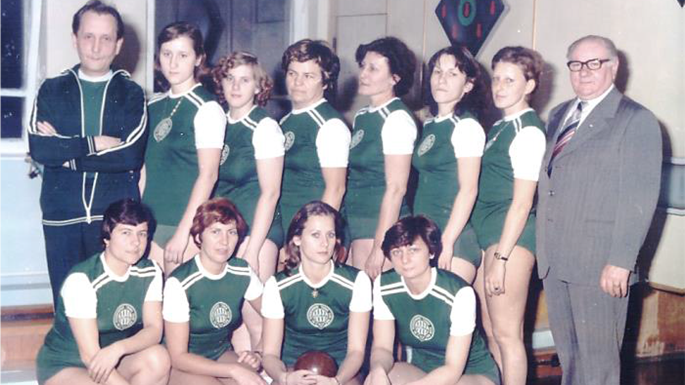

A Ferencvárosi Torna Club férfi tekeszakosztálya Budapest első számú tekecsapata, amely az NB I. Keleti csoportjában szerepel.
1948-as alapítása óta 57 alkalommal avatták magyar bajnokká, 1 alkalommal nyerték meg a világkupát, illetve 4 alkalommal nyerték meg az Európa Kupát.
Eredet

Az FTC (Ferencvárosi Torna Club) férfi tekeszakosztálya 1948-ban alakult. Jelenleg az elnöke Mátraházi István.
Az új szakosztály nem a nulláról indult, a budapesti BSzKRT SE szakosztályát vették át, és azonnal neveztek is a magyar csapatbajnoki küzdelmekbe, a Szuperligába. Első bajnoki mérkőzésüket megnyerték a MÁVAG ellen, majd a bajnokságban 30 mérkőzésből 18-at megnyerve, 1 döntetlen mellett, 11 vereséget szenvedve a negyedik helyen végeztek.
Az FTC mérkőzéseit a ferencvárosi Elek Gyula Arénában található "Csányi sétány 77." pályán játssza.
A pálya 2002-ben épült az Elek Gyula Aréna alagsorában, így közel van sok sportlétesítmény is. A pálya 2019-ben felújításon esett át, mivel nem felelt meg a nemzetközi szövetség feltételeinek.
Csányi Béla
Csányi és a Fradi kapcsolata
1964 és 1967 között a Szegedi Postás, 1967 és 1969 között a Szegedi IKV, 1969 és 1990 között a Ferencvárosi TC, 1990 és 2015 között a német SKC Victoria Bamberg tekézője volt. 32 magyar bajnoki címet nyert pályafutása során, ebből 13-at egyéniben, 11-et párosban, nyolcat pedig csapatban. 2003-ban és 2005-ben Bajnokok Ligáját nyert, a Bamberg színeiben tíz német bajnoki címet nyert. 2009-ben a Bamberg edzőjeként megnyerte a Bajnokok Ligáját.
Pályafutása
Pályafutása során kilenc világbajnoki aranyérmet szerzett, emellett az FTC színeiben 32 magyar bajnoki elsőséget is begyűjtött. Ebből 13 egyéni, 11 páros és 8 csapat arany. A kilenc világbajnoki cím mellett nyolcszoros vb-ezüstérmesnek, négyszeres vb-bronzérmesnek mondhatta magát. Öt alkalommal nyerte meg a Bajnokok Ligája elődjének számító világkupát. Tizenhét alkalommal volt az év férfi tekézője. Magyarországi sportpályafutása után 1989-ben a Bamberg játékosaként tízszeres német bajnok volt.
A teke Puskása
Csányi Bélát 2000-ben Budapesten, mint a 20. század 50 legnagyszerűbb magyar sportolóját ünnepelték, ahol a labdarúgó Puskás Ferenccel és Albert Flóriánnal, az ökölvívó Papp Lászlóval, vagy az öttusázó Balczó Andrással együtt köszöntötték, 2015-ben pedig a Nemzetközi Teke Szövetség (NBC) által alapított Halhatatlanok Klubjának első tagja lett. Egy vérbeli istenáldotta tehetség, akit később egész egyszerűen a tekesport Puskásának neveztek.